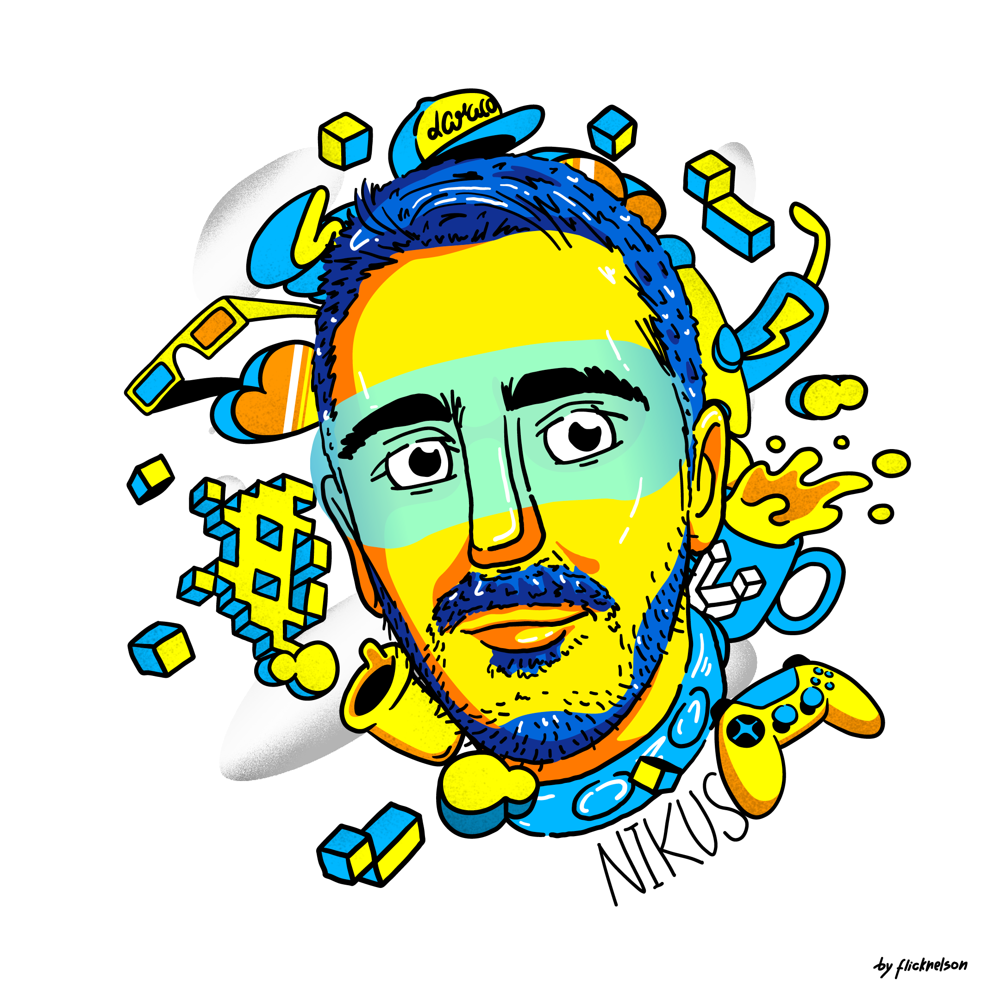

Pedro Martins aka NIKUS

A cartoon from @Nikus created by a friend who loves animals (if you know what i mean).
Pedro Martins, 31, is a Fullstack Webdeveloper borned and raised at Freamunde, Portugal.
Pedro discovered his passion about the digital world at the young age of 14. Tecnology always caused curiosity but his will to understand it or to solve a problem using it made him the professional and the entrepreneur he is today.
- Born on the 23/05/1991.
- Based at Freamunde till today.
- 2011 Pedro founded INDIGIT, his own company.
- 2021 Pedro found out during the pandemic that he wanted to join another company.
- The next year Nikus aka CloudStrife decided to dedicate his life and his braincells to Faceit competition that apparently is the most difficult mission that he faced so far.
- A Dutch company sees on Pedro a "plus" and invited him to join them. Pedro accepted because he has nowhere to go at this point.
- Grab a drink and wait for the further updates.